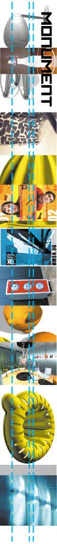

| |
MONUMENTAL AS ANYTHING
| |
Earlier this year we invited budding interior, industrial, textile, graphic, object, architectural, event and set designers to send in photographs of their creations to appear in the October edition of Monument - Australia's well-esteemed architecture and design magazine. The special noise supplement, entitled "Headed For The High Rise", features some of the most original designers and off-the-wall works - and they're all from people under the age of 25.
| |
Fleur Watson, Editor of Monument, has been in the architectural/industrial design opinion game for a good many years now, and being the head honcho at the mag, we thought that handing the mic over for some professional commentary on the project might just be in order.
"Lighting is something that melds that whole idea of technology and design really well," says Watson, referring to the refreshingly original lighting designs of Sydney's Henry Lance and Melbourne's Guy Blashki. "I think sometimes it becomes more about fashion than necessarily about design, and good design isn't necessarily fashion-driven; it might become fashion..."
But any twenty-something artist will always go that extra mile to make sure the fashion police don't make too many arrests in the land of modern design, like 25-year-old Brooklyn Damson, whose posters fuse architecture and urban angst with graffiti, and have found their way into the supplement's opening pages. "My work is about being a product of your environment," Damson offers. "My art is about built-up concrete, surveillance and sniffer dogs."
"Then there were a few designs that were more 'pop-art'," continues Fleur Watson, further analysing the noisy content of her October issue, "like the 'Dishy!', 'Juicy!' and 'Fluffy!' works Aladar Apponyi's Juicer, Lucas Sproson's Dish Drainer and Richard Harrod's Egg Beater, [on page 84/85 of the Monument issue]. That stuff is really fun, and follows the idea of making things really over-the-top and almost over-designed, more fashion-driven."
The noise supplement captures not just a generation of amazing design talent, but a new breed of thinkers too - balancing a variety of working materials like glass, wire and ceramics with often staggeringly clever ideas. Functional to not-so-functional, and from new-aged washing contraptions and wind-powered streetlights to departure lounges and fragile glass art displays.
"The other thing I really liked in noise was the jewellery designers," Watson says of the work of Kate Smith, Petrina Kernchen and Melissa Beal. "There's something about jewellery, in that even though it's meant to be worn and it's a decoration, it's still really about function because you're working in such small details that you've actually got to make it refined enough to work as a piece of design, let alone being about a piece of art or decoration."
As were we at noise, Watson was also moved by the quiet reverential success of South Australian 25-year-old second-generation architect Anthony Giordano, whose monument work features in the supplement. "It's kinda nice to see that whole 'handing it on from father to son' process," she says.
In conclusion, Watson passionately states, "I hate that thing about architecture and design when it sometimes becomes a bit 'clever' and 'who's who'. Sure, you need it to be respected, but you also need it to be able to be accessed. People need to be able to understand it and they don't want to be frightened of it - I think that's really important."
Monument magazine is available in newsagencies now, and be sure to look around the noise Monument homepage to view a large selection of published and unpublished submissions, artist profiles and more info.
Return to the MONUMENT Project Homepage
(Psst... we reckon you'll also be interested in the BLACK+WHITE,HQ and POSTCARDS Projects)
|
|
|